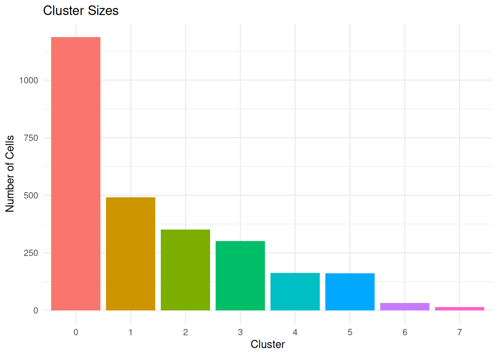
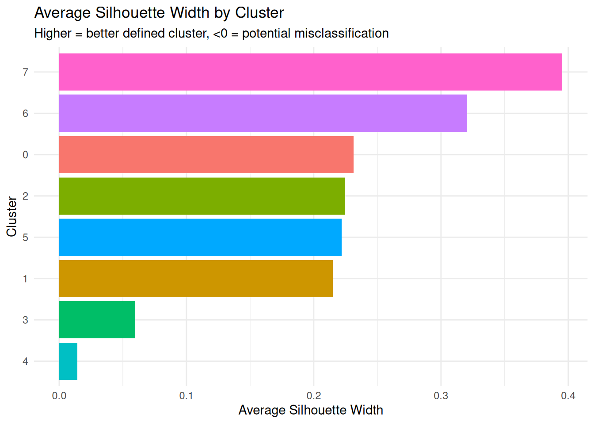
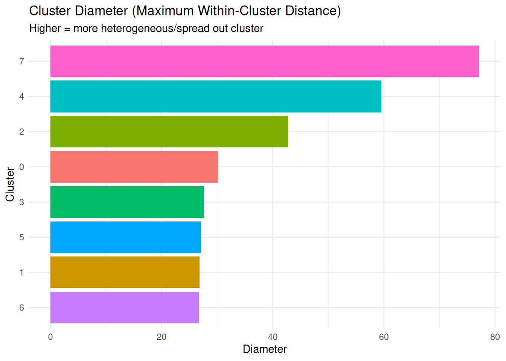
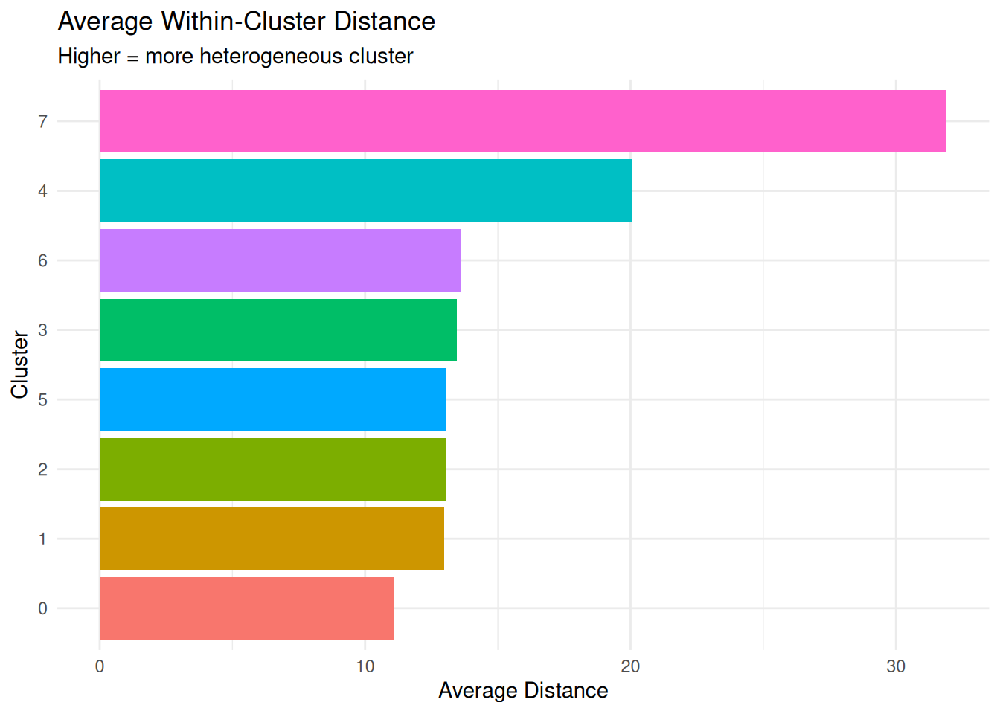
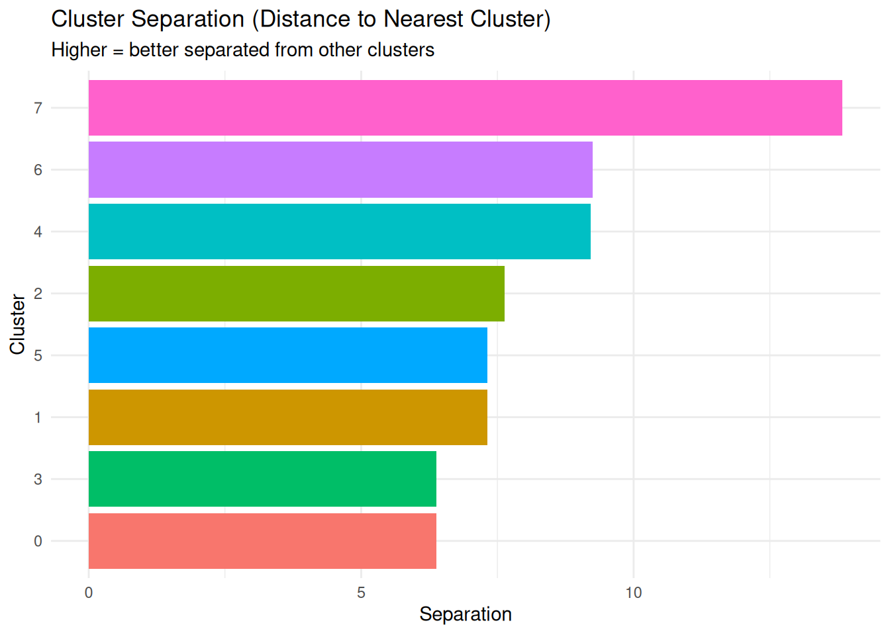
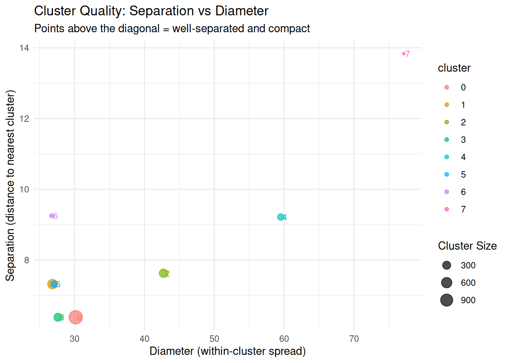

Last updated: 2026-01-19
Checks: 7 0
Knit directory: muse/
This reproducible R Markdown analysis was created with workflowr (version 1.7.1). The Checks tab describes the reproducibility checks that were applied when the results were created. The Past versions tab lists the development history.
Great! Since the R Markdown file has been committed to the Git repository, you know the exact version of the code that produced these results.
Great job! The global environment was empty. Objects defined in the global environment can affect the analysis in your R Markdown file in unknown ways. For reproduciblity it’s best to always run the code in an empty environment.
The command set.seed(20200712) was run prior to running
the code in the R Markdown file. Setting a seed ensures that any results
that rely on randomness, e.g. subsampling or permutations, are
reproducible.
Great job! Recording the operating system, R version, and package versions is critical for reproducibility.
Nice! There were no cached chunks for this analysis, so you can be confident that you successfully produced the results during this run.
Great job! Using relative paths to the files within your workflowr project makes it easier to run your code on other machines.
Great! You are using Git for version control. Tracking code development and connecting the code version to the results is critical for reproducibility.
The results in this page were generated with repository version c141148. See the Past versions tab to see a history of the changes made to the R Markdown and HTML files.
Note that you need to be careful to ensure that all relevant files for
the analysis have been committed to Git prior to generating the results
(you can use wflow_publish or
wflow_git_commit). workflowr only checks the R Markdown
file, but you know if there are other scripts or data files that it
depends on. Below is the status of the Git repository when the results
were generated:
Ignored files:
Ignored: .Rproj.user/
Ignored: data/1M_neurons_filtered_gene_bc_matrices_h5.h5
Ignored: data/293t/
Ignored: data/293t_3t3_filtered_gene_bc_matrices.tar.gz
Ignored: data/293t_filtered_gene_bc_matrices.tar.gz
Ignored: data/5k_Human_Donor1_PBMC_3p_gem-x_5k_Human_Donor1_PBMC_3p_gem-x_count_sample_filtered_feature_bc_matrix.h5
Ignored: data/5k_Human_Donor2_PBMC_3p_gem-x_5k_Human_Donor2_PBMC_3p_gem-x_count_sample_filtered_feature_bc_matrix.h5
Ignored: data/5k_Human_Donor3_PBMC_3p_gem-x_5k_Human_Donor3_PBMC_3p_gem-x_count_sample_filtered_feature_bc_matrix.h5
Ignored: data/5k_Human_Donor4_PBMC_3p_gem-x_5k_Human_Donor4_PBMC_3p_gem-x_count_sample_filtered_feature_bc_matrix.h5
Ignored: data/97516b79-8d08-46a6-b329-5d0a25b0be98.h5ad
Ignored: data/Parent_SC3v3_Human_Glioblastoma_filtered_feature_bc_matrix.tar.gz
Ignored: data/brain_counts/
Ignored: data/cl.obo
Ignored: data/cl.owl
Ignored: data/jurkat/
Ignored: data/jurkat:293t_50:50_filtered_gene_bc_matrices.tar.gz
Ignored: data/jurkat_293t/
Ignored: data/jurkat_filtered_gene_bc_matrices.tar.gz
Ignored: data/pbmc20k/
Ignored: data/pbmc20k_seurat/
Ignored: data/pbmc3k.csv
Ignored: data/pbmc3k.csv.gz
Ignored: data/pbmc3k.h5ad
Ignored: data/pbmc3k/
Ignored: data/pbmc3k_bpcells_mat/
Ignored: data/pbmc3k_export.mtx
Ignored: data/pbmc3k_matrix.mtx
Ignored: data/pbmc3k_seurat.rds
Ignored: data/pbmc4k_filtered_gene_bc_matrices.tar.gz
Ignored: data/pbmc_1k_v3_filtered_feature_bc_matrix.h5
Ignored: data/pbmc_1k_v3_raw_feature_bc_matrix.h5
Ignored: data/refdata-gex-GRCh38-2020-A.tar.gz
Ignored: data/seurat_1m_neuron.rds
Ignored: data/t_3k_filtered_gene_bc_matrices.tar.gz
Ignored: r_packages_4.4.1/
Ignored: r_packages_4.5.0/
Untracked files:
Untracked: analysis/bioc.Rmd
Untracked: analysis/bioc_scrnaseq.Rmd
Untracked: analysis/likelihood.Rmd
Untracked: bpcells_matrix/
Untracked: data/Caenorhabditis_elegans.WBcel235.113.gtf.gz
Untracked: data/GCF_043380555.1-RS_2024_12_gene_ontology.gaf.gz
Untracked: data/arab.rds
Untracked: data/astronomicalunit.csv
Untracked: data/femaleMiceWeights.csv
Untracked: data/lung_bcell.rds
Untracked: m3/
Untracked: women.json
Unstaged changes:
Modified: analysis/icc.Rmd
Modified: analysis/isoform_switch_analyzer.Rmd
Note that any generated files, e.g. HTML, png, CSS, etc., are not included in this status report because it is ok for generated content to have uncommitted changes.
These are the previous versions of the repository in which changes were
made to the R Markdown (analysis/fpc.Rmd) and HTML
(docs/fpc.html) files. If you’ve configured a remote Git
repository (see ?wflow_git_remote), click on the hyperlinks
in the table below to view the files as they were in that past version.
| File | Version | Author | Date | Message |
|---|---|---|---|---|
| Rmd | c141148 | Dave Tang | 2026-01-19 | Flexible Procedures for Clustering |
This notebook uses the {fpc} package’s
cluster.stats() function to comprehensively assess cluster
quality and heterogeneity in scRNA-seq data. This function calculates
dozens of clustering validation metrics in a single call.
install.packages("fpc")Import raw pbmc3k dataset from my server.
seurat_obj <- readRDS(url("https://davetang.org/file/pbmc3k_seurat.rds", "rb"))
seurat_objAn object of class Seurat
32738 features across 2700 samples within 1 assay
Active assay: RNA (32738 features, 0 variable features)
1 layer present: countsFilter.
seurat_obj <- CreateSeuratObject(
counts = seurat_obj@assays$RNA$counts,
min.cells = 3,
min.features = 200,
project = "pbmc3k"
)
seurat_objAn object of class Seurat
13714 features across 2700 samples within 1 assay
Active assay: RNA (13714 features, 0 variable features)
1 layer present: countsProcess with the Seurat 4 workflow.
seurat_wf_v4 <- function(seurat_obj, scale_factor = 1e4, num_features = 2000, num_pcs = 30, cluster_res = 0.5, debug_flag = FALSE){
seurat_obj <- NormalizeData(seurat_obj, normalization.method = "LogNormalize", scale.factor = scale_factor, verbose = debug_flag)
seurat_obj <- FindVariableFeatures(seurat_obj, selection.method = 'vst', nfeatures = num_features, verbose = debug_flag)
seurat_obj <- ScaleData(seurat_obj, verbose = debug_flag)
seurat_obj <- RunPCA(seurat_obj, verbose = debug_flag)
seurat_obj <- RunUMAP(seurat_obj, dims = 1:num_pcs, verbose = debug_flag)
seurat_obj <- FindNeighbors(seurat_obj, dims = 1:num_pcs, verbose = debug_flag)
seurat_obj <- FindClusters(seurat_obj, resolution = cluster_res, verbose = debug_flag)
seurat_obj
}
seurat_obj <- seurat_wf_v4(seurat_obj)Warning: The default method for RunUMAP has changed from calling Python UMAP via reticulate to the R-native UWOT using the cosine metric
To use Python UMAP via reticulate, set umap.method to 'umap-learn' and metric to 'correlation'
This message will be shown once per sessionCluster results are in seurat_clusters.
table(seurat_obj$seurat_clusters)
0 1 2 3 4 5 6 7
1187 491 351 301 163 161 32 14 Calculate cluster statistics.
pca_embeddings <- Seurat::Embeddings(seurat_obj, reduction = "pca")[, 1:30]
clusters <- as.numeric(seurat_obj$seurat_clusters)
# Calculate distance matrix
dist_matrix <- stats::dist(pca_embeddings)
# Calculate comprehensive cluster statistics
stats <- fpc::cluster.stats(d = dist_matrix, clustering = clusters)
names(stats) [1] "n" "cluster.number" "cluster.size"
[4] "min.cluster.size" "noisen" "diameter"
[7] "average.distance" "median.distance" "separation"
[10] "average.toother" "separation.matrix" "ave.between.matrix"
[13] "average.between" "average.within" "n.between"
[16] "n.within" "max.diameter" "min.separation"
[19] "within.cluster.ss" "clus.avg.silwidths" "avg.silwidth"
[22] "g2" "g3" "pearsongamma"
[25] "dunn" "dunn2" "entropy"
[28] "wb.ratio" "ch" "cwidegap"
[31] "widestgap" "sindex" "corrected.rand"
[34] "vi" These metrics evaluate the overall quality of the clustering solution.
global_metrics <- data.frame(
Metric = c("Number of Clusters",
"Cluster Sizes (min, mean, max)",
"Dunn Index",
"Dunn2 Index",
"Average Silhouette Width",
"Average Distance Within Clusters",
"Average Distance Between Clusters",
"Within/Between Ratio",
"Calinski-Harabasz Index",
"Pearson Gamma"),
Value = c(
stats$cluster.number,
paste(min(stats$cluster.size), round(mean(stats$cluster.size), 1),
max(stats$cluster.size), sep = " / "),
round(stats$dunn, 4),
round(stats$dunn2, 4),
round(stats$avg.silwidth, 4),
round(stats$average.within, 2),
round(stats$average.between, 2),
round(stats$wb.ratio, 4),
round(stats$ch, 2),
round(stats$pearsongamma, 4)
),
Interpretation = c(
"Total number of clusters identified",
"Range and average cluster sizes",
"Higher is better (>1 is good, >2 is excellent)",
"Alternative Dunn index, similar interpretation",
"Higher is better (-1 to 1, >0.5 is good)",
"Lower is better (compact clusters)",
"Higher is better (well-separated clusters)",
"Lower is better (ratio of within to between distance)",
"Higher is better (well-separated, compact clusters)",
"Correlation between distances and clustering (higher is better)"
)
)
knitr::kable(global_metrics)| Metric | Value | Interpretation |
|---|---|---|
| Number of Clusters | 8 | Total number of clusters identified |
| Cluster Sizes (min, mean, max) | 14 / 337.5 / 1187 | Range and average cluster sizes |
| Dunn Index | 0.0828 | Higher is better (>1 is good, >2 is excellent) |
| Dunn2 Index | 0.4506 | Alternative Dunn index, similar interpretation |
| Average Silhouette Width | 0.1966 | Higher is better (-1 to 1, >0.5 is good) |
| Average Distance Within Clusters | 12.74 | Lower is better (compact clusters) |
| Average Distance Between Clusters | 20.32 | Higher is better (well-separated clusters) |
| Within/Between Ratio | 0.6269 | Lower is better (ratio of within to between distance) |
| Calinski-Harabasz Index | 402.79 | Higher is better (well-separated, compact clusters) |
| Pearson Gamma | 0.5376 | Correlation between distances and clustering (higher is better) |
dunn,
dunn2)What it measures: Ratio of minimum inter-cluster distance to maximum intra-cluster diameter.
Formula: Dunn = (min distance between clusters) / (max distance within clusters)
Interpretation:
dunn2 is a more robust alternative calculationcat(paste("Dunn Index:", round(stats$dunn, 4), "\n"))Dunn Index: 0.0828 cat(paste("Dunn2 Index:", round(stats$dunn2, 4), "\n"))Dunn2 Index: 0.4506 if (stats$dunn > 2) {
cat("Excellent cluster separation\n")
} else if (stats$dunn > 1) {
cat("Good cluster separation\n")
} else {
cat("Clusters may be overlapping or poorly defined\n")
}Clusters may be overlapping or poorly definedavg.silwidth)What it measures: How similar each point is to its own cluster compared to other clusters.
Interpretation:
cat(paste("Average Silhouette Width:", round(stats$avg.silwidth, 4), "\n"))Average Silhouette Width: 0.1966 if (stats$avg.silwidth > 0.7) {
cat("Strong cluster structure\n")
} else if (stats$avg.silwidth > 0.5) {
cat("Reasonable cluster structure\n")
} else if (stats$avg.silwidth > 0.25) {
cat("Weak cluster structure\n")
} else {
cat("Very weak or no substantial structure\n")
}Very weak or no substantial structurech)What it measures: Ratio of between-cluster variance to within-cluster variance.
Interpretation:
cat(paste("Calinski-Harabasz Index:", round(stats$ch, 2), "\n"))Calinski-Harabasz Index: 402.79 cat("Higher values indicate better-defined clusters\n")Higher values indicate better-defined clusterscat("Use this to compare different clustering resolutions\n")Use this to compare different clustering resolutionswb.ratio)What it measures: Ratio of average within-cluster distance to average between-cluster distance.
Interpretation:
1.0: Poor separation (clusters overlap)
cat(paste("Within/Between Ratio:", round(stats$wb.ratio, 4), "\n"))Within/Between Ratio: 0.6269 cat(paste("Average distance within clusters:", round(stats$average.within, 2), "\n"))Average distance within clusters: 12.74 cat(paste("Average distance between clusters:", round(stats$average.between, 2), "\n"))Average distance between clusters: 20.32 if (stats$wb.ratio < 0.5) {
cat("Very good cluster separation\n")
} else if (stats$wb.ratio < 1.0) {
cat("Moderate cluster separation\n")
} else {
cat("Poor cluster separation - clusters may overlap\n")
}Moderate cluster separationThese metrics evaluate each cluster individually.
# Get cluster labels back to original format
cluster_labels <- levels(seurat_obj$seurat_clusters)
# Create per-cluster summary
per_cluster_summary <- data.frame(
cluster = cluster_labels,
n_cells = stats$cluster.size,
avg_silwidth = stats$clus.avg.silwidths,
diameter = stats$diameter,
average_distance = stats$average.distance,
separation = stats$separation
)
print("Per-Cluster Metrics:")[1] "Per-Cluster Metrics:"print(per_cluster_summary) cluster n_cells avg_silwidth diameter average_distance separation
1 0 1187 0.23125232 30.15910 11.06922 6.382385
2 1 491 0.21488745 26.83629 12.98647 7.319883
3 2 351 0.22471219 42.72548 13.05064 7.626182
4 3 301 0.05981687 27.61723 13.44704 6.382385
5 4 163 0.01407852 59.51402 20.08154 9.216088
6 5 161 0.22205239 27.09877 13.06556 7.319883
7 6 32 0.32047942 26.71827 13.63669 9.250153
8 7 14 0.39537997 77.12201 31.91325 13.835638cluster.size)What it measures: Number of cells in each cluster.
Why it matters: Very small clusters may be outliers; very large clusters may need sub-clustering.
ggplot(per_cluster_summary, aes(x = cluster, y = n_cells, fill = cluster)) +
geom_bar(stat = "identity") +
labs(title = "Cluster Sizes",
x = "Cluster", y = "Number of Cells") +
theme_minimal() +
theme(legend.position = "none")
clus.avg.silwidths)What it measures: How well-defined each cluster is.
Interpretation:
ggplot(per_cluster_summary, aes(x = reorder(cluster, avg_silwidth),
y = avg_silwidth, fill = cluster)) +
geom_bar(stat = "identity") +
coord_flip() +
labs(title = "Average Silhouette Width by Cluster",
subtitle = "Higher = better defined cluster, <0 = potential misclassification",
x = "Cluster", y = "Average Silhouette Width") +
theme_minimal() +
theme(legend.position = "none")
diameter)What it measures: Maximum distance between any two points in the cluster.
Interpretation:
ggplot(per_cluster_summary, aes(x = reorder(cluster, diameter),
y = diameter, fill = cluster)) +
geom_bar(stat = "identity") +
coord_flip() +
labs(title = "Cluster Diameter (Maximum Within-Cluster Distance)",
subtitle = "Higher = more heterogeneous/spread out cluster",
x = "Cluster", y = "Diameter") +
theme_minimal() +
theme(legend.position = "none")
average.distance)What it measures: Mean pairwise distance between all points in the cluster.
Interpretation:
ggplot(per_cluster_summary, aes(x = reorder(cluster, average_distance),
y = average_distance, fill = cluster)) +
geom_bar(stat = "identity") +
coord_flip() +
labs(title = "Average Within-Cluster Distance",
subtitle = "Higher = more heterogeneous cluster",
x = "Cluster", y = "Average Distance") +
theme_minimal() +
theme(legend.position = "none")
# Identify most and least heterogeneous clusters
most_heterogeneous <- per_cluster_summary %>%
dplyr::arrange(desc(average_distance)) %>%
dplyr::slice(1:3)
least_heterogeneous <- per_cluster_summary %>%
dplyr::arrange(average_distance) %>%
dplyr::slice(1:3)
cat("\nMost heterogeneous clusters (highest average distance):\n")
Most heterogeneous clusters (highest average distance):print(most_heterogeneous %>% dplyr::select(cluster, average_distance, diameter)) cluster average_distance diameter
8 7 31.91325 77.12201
5 4 20.08154 59.51402
7 6 13.63669 26.71827cat("\nLeast heterogeneous clusters (lowest average distance):\n")
Least heterogeneous clusters (lowest average distance):print(least_heterogeneous %>% dplyr::select(cluster, average_distance, diameter)) cluster average_distance diameter
1 0 11.06922 30.15910
2 1 12.98647 26.83629
3 2 13.05064 42.72548separation)What it measures: Minimum distance from each cluster to any other cluster.
Interpretation:
ggplot(per_cluster_summary, aes(x = reorder(cluster, separation),
y = separation, fill = cluster)) +
geom_bar(stat = "identity") +
coord_flip() +
labs(title = "Cluster Separation (Distance to Nearest Cluster)",
subtitle = "Higher = better separated from other clusters",
x = "Cluster", y = "Separation") +
theme_minimal() +
theme(legend.position = "none")
Combining diameter and separation gives a comprehensive view of cluster quality.
# Calculate a simple quality metric: separation / diameter
# Higher values = well-separated and compact
per_cluster_summary <- per_cluster_summary |>
dplyr::mutate(quality_ratio = separation / diameter)
ggplot(per_cluster_summary, aes(x = diameter, y = separation,
color = cluster, size = n_cells)) +
geom_point(alpha = 0.7) +
geom_text(ggplot2::aes(label = cluster), hjust = -0.3, size = 3, show.legend = FALSE) +
geom_abline(slope = 1, intercept = 0, linetype = "dashed", color = "gray") +
labs(title = "Cluster Quality: Separation vs Diameter",
subtitle = "Points above the diagonal = well-separated and compact",
x = "Diameter (within-cluster spread)",
y = "Separation (distance to nearest cluster)",
size = "Cluster Size") +
theme_minimal()
cat("\nCluster Quality Ratios (Separation/Diameter):\n")
Cluster Quality Ratios (Separation/Diameter):cat("Higher values indicate better quality (compact and well-separated)\n\n")Higher values indicate better quality (compact and well-separated)print(per_cluster_summary |>
dplyr::select(cluster, diameter, separation, quality_ratio) |>
dplyr::arrange(desc(quality_ratio))) cluster diameter separation quality_ratio
7 6 26.71827 9.250153 0.3462107
2 1 26.83629 7.319883 0.2727606
6 5 27.09877 7.319883 0.2701186
4 3 27.61723 6.382385 0.2311016
1 0 30.15910 6.382385 0.2116238
8 7 77.12201 13.835638 0.1793993
3 2 42.72548 7.626182 0.1784926
5 4 59.51402 9.216088 0.1548558cat("=== CLUSTERING QUALITY SUMMARY ===\n\n")=== CLUSTERING QUALITY SUMMARY ===cat("Overall Assessment:\n")Overall Assessment:cat(paste(" Number of clusters:", stats$cluster.number, "\n")) Number of clusters: 8 cat(paste(" Average Silhouette Width:", round(stats$avg.silwidth, 3),
ifelse(stats$avg.silwidth > 0.5, "✓ Good", "⚠ Needs review"), "\n")) Average Silhouette Width: 0.197 ⚠ Needs review cat(paste(" Dunn Index:", round(stats$dunn, 3),
ifelse(stats$dunn > 1, "✓ Good separation", "⚠ Weak separation"), "\n")) Dunn Index: 0.083 ⚠ Weak separation cat(paste(" Within/Between Ratio:", round(stats$wb.ratio, 3),
ifelse(stats$wb.ratio < 1, "✓ Good", "⚠ Overlapping"), "\n")) Within/Between Ratio: 0.627 ✓ Good cat("\nClusters Needing Review:\n")
Clusters Needing Review:problem_clusters <- per_cluster_summary %>%
dplyr::filter(avg_silwidth < 0.25 | quality_ratio < 0.5)
if (nrow(problem_clusters) > 0) {
print(problem_clusters %>%
dplyr::select(cluster, avg_silwidth, quality_ratio))
cat("\nThese clusters may benefit from:\n")
cat(" - Sub-clustering (if large and heterogeneous)\n")
cat(" - Merging with similar clusters (if poorly separated)\n")
cat(" - Removal as outliers (if very small)\n")
} else {
cat(" All clusters show reasonable quality metrics ✓\n")
} cluster avg_silwidth quality_ratio
1 0 0.23125232 0.2116238
2 1 0.21488745 0.2727606
3 2 0.22471219 0.1784926
4 3 0.05981687 0.2311016
5 4 0.01407852 0.1548558
6 5 0.22205239 0.2701186
7 6 0.32047942 0.3462107
8 7 0.39537997 0.1793993
These clusters may benefit from:
- Sub-clustering (if large and heterogeneous)
- Merging with similar clusters (if poorly separated)
- Removal as outliers (if very small)cat("\nMost Heterogeneous Clusters (consider sub-clustering):\n")
Most Heterogeneous Clusters (consider sub-clustering):print(per_cluster_summary %>%
dplyr::arrange(desc(average_distance)) %>%
dplyr::select(cluster, n_cells, diameter, average_distance) %>%
dplyr::slice(1:3)) cluster n_cells diameter average_distance
8 7 14 77.12201 31.91325
5 4 163 59.51402 20.08154
7 6 32 26.71827 13.63669
sessionInfo()R version 4.5.0 (2025-04-11)
Platform: x86_64-pc-linux-gnu
Running under: Ubuntu 24.04.3 LTS
Matrix products: default
BLAS: /usr/lib/x86_64-linux-gnu/openblas-pthread/libblas.so.3
LAPACK: /usr/lib/x86_64-linux-gnu/openblas-pthread/libopenblasp-r0.3.26.so; LAPACK version 3.12.0
locale:
[1] LC_CTYPE=en_US.UTF-8 LC_NUMERIC=C
[3] LC_TIME=en_US.UTF-8 LC_COLLATE=en_US.UTF-8
[5] LC_MONETARY=en_US.UTF-8 LC_MESSAGES=en_US.UTF-8
[7] LC_PAPER=en_US.UTF-8 LC_NAME=C
[9] LC_ADDRESS=C LC_TELEPHONE=C
[11] LC_MEASUREMENT=en_US.UTF-8 LC_IDENTIFICATION=C
time zone: Etc/UTC
tzcode source: system (glibc)
attached base packages:
[1] stats graphics grDevices utils datasets methods base
other attached packages:
[1] future_1.58.0 fpc_2.2-13 Seurat_5.3.0 SeuratObject_5.1.0
[5] sp_2.2-0 lubridate_1.9.4 forcats_1.0.0 stringr_1.5.1
[9] dplyr_1.1.4 purrr_1.0.4 readr_2.1.5 tidyr_1.3.1
[13] tibble_3.3.0 ggplot2_3.5.2 tidyverse_2.0.0 workflowr_1.7.1
loaded via a namespace (and not attached):
[1] RColorBrewer_1.1-3 rstudioapi_0.17.1 jsonlite_2.0.0
[4] magrittr_2.0.3 modeltools_0.2-24 spatstat.utils_3.1-5
[7] farver_2.1.2 rmarkdown_2.29 fs_1.6.6
[10] vctrs_0.6.5 ROCR_1.0-11 spatstat.explore_3.5-2
[13] htmltools_0.5.8.1 sass_0.4.10 sctransform_0.4.2
[16] parallelly_1.45.0 KernSmooth_2.23-26 bslib_0.9.0
[19] htmlwidgets_1.6.4 ica_1.0-3 plyr_1.8.9
[22] plotly_4.11.0 zoo_1.8-14 cachem_1.1.0
[25] whisker_0.4.1 igraph_2.1.4 mime_0.13
[28] lifecycle_1.0.4 pkgconfig_2.0.3 Matrix_1.7-3
[31] R6_2.6.1 fastmap_1.2.0 fitdistrplus_1.2-4
[34] shiny_1.11.1 digest_0.6.37 colorspace_2.1-1
[37] patchwork_1.3.0 ps_1.9.1 rprojroot_2.0.4
[40] tensor_1.5.1 RSpectra_0.16-2 irlba_2.3.5.1
[43] labeling_0.4.3 progressr_0.15.1 spatstat.sparse_3.1-0
[46] timechange_0.3.0 httr_1.4.7 polyclip_1.10-7
[49] abind_1.4-8 compiler_4.5.0 withr_3.0.2
[52] fastDummies_1.7.5 MASS_7.3-65 tools_4.5.0
[55] lmtest_0.9-40 prabclus_2.3-4 httpuv_1.6.16
[58] future.apply_1.20.0 nnet_7.3-20 goftest_1.2-3
[61] glue_1.8.0 callr_3.7.6 nlme_3.1-168
[64] promises_1.3.3 grid_4.5.0 Rtsne_0.17
[67] getPass_0.2-4 cluster_2.1.8.1 reshape2_1.4.4
[70] generics_0.1.4 gtable_0.3.6 spatstat.data_3.1-6
[73] tzdb_0.5.0 class_7.3-23 data.table_1.17.4
[76] hms_1.1.3 flexmix_2.3-20 spatstat.geom_3.5-0
[79] RcppAnnoy_0.0.22 ggrepel_0.9.6 RANN_2.6.2
[82] pillar_1.10.2 spam_2.11-1 RcppHNSW_0.6.0
[85] later_1.4.2 robustbase_0.99-4-1 splines_4.5.0
[88] lattice_0.22-6 survival_3.8-3 deldir_2.0-4
[91] tidyselect_1.2.1 miniUI_0.1.2 pbapply_1.7-4
[94] knitr_1.50 git2r_0.36.2 gridExtra_2.3
[97] scattermore_1.2 stats4_4.5.0 xfun_0.52
[100] diptest_0.77-1 matrixStats_1.5.0 DEoptimR_1.1-3-1
[103] stringi_1.8.7 lazyeval_0.2.2 yaml_2.3.10
[106] evaluate_1.0.3 codetools_0.2-20 kernlab_0.9-33
[109] cli_3.6.5 uwot_0.2.3 xtable_1.8-4
[112] reticulate_1.43.0 processx_3.8.6 jquerylib_0.1.4
[115] Rcpp_1.0.14 globals_0.18.0 spatstat.random_3.4-1
[118] png_0.1-8 spatstat.univar_3.1-4 parallel_4.5.0
[121] mclust_6.1.1 dotCall64_1.2 listenv_0.9.1
[124] viridisLite_0.4.2 scales_1.4.0 ggridges_0.5.6
[127] rlang_1.1.6 cowplot_1.2.0